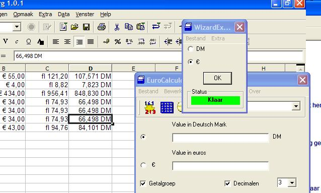

{kind=link}

Manual for Syscalculator 1.74
Introduction
Thank you for downloading our software.
Syscalculator started as a euro conversion tool and is now maintained as a classic legacy converter. Version 1.74 is a 2026 maintenance release of the original VB6 line. It includes 21 euro legacy currency converters, including newer euro adoptions such as Croatia 2023 and Bulgaria 2026.
This release keeps the classic Syscalculator workflow available while the modern Syscalculator 2.0 line is being developed. It combines these features in one program.
It :
INDEX
2. WizardExpress. Conversion Tool
3. Converting from Guilders to Deutsche Mark (Tri-Conversion)
5. Setting freesyscal.cfg and Language Translation
9. Support
If you do not want the introduction screen to appear on each startup after the first use of the Syscalculator, then disable the introduction option.
Wizardexpress, Conversion Tool.
WizardExpress can be used in combination with older applications such as Excel, Word or other classic Office programs. This utility will convert your amounts, for example, from guilders to euro. It's a conversion tool that functions in the same way as the 'Replace & Find' feature does.
Compatibility note: WizardExpress is intended for older Office and Word versions. Microsoft 365 / Office 365 is known not to work reliably with this old VB6 integration.
1. Add a new column to your worksheet and define the cell-properties as 'currency value Euro'
2. Select all the amounts (only values, no text) and copy these marked amounts (= to the clipboard).
3. Launch the Syscalculator WizardExpress
4. Click the "OK" button to convert all amounts. Wait for the statusbox red 'start' sign to turn to the green 'ready' sign.
Important: do not copy any other information to the clipboard before clicking the 'ok' button of the WizardExpress: this will cause the loss of the values that should be converted. You will have to start again in that case.
5. Place your cursor in the newly made column and choose the 'Paste' command. In normal classic applications the paste menu or mouse can be used. With Excel / Microsoft 365, use Ctrl+V directly after conversion because Excel has its own clipboard management. The now converted amounts will appear, as shown in the example below :
6. Done !
Feature: Symbol.
If the 'symbol' option in the option box is checked, then the
appropriate symbol will precede the pasted values,
for example: fl 351,53 -> € 241,22
If the symbol-option is not checked, no symbol will be added to the pasted values.
Converting from Guilders to Deutsche Mark (Tri-Conversion)
It's easy to convert from guilders to Deutsche Mark or any other currency of your choice.
1. Copy the marked amounts and convert to Euro by following the steps described above in Wizardexpress, Conversion Tool
2. Change: NLG -> DEM (in the dropdown box)
3. Choose: Euro in WizardExpress (in the option box)
4. Convert these amounts to the currency of your choice by following the steps described above in Wizardexpress, Conversion Tool

This feature is a standard calculator. You can use it to convert or to calculate your values.
Setting Default Currency and Language

You can modify the default language setting to the one of your choice (needs an existing '*.lng' file however) or you can add a new currency unit
Properties :
-Rename your currency units.
Setting a unit as default
Your choosing of a new unit as default, will result in the use by Syscalculator of this new value as default value on the next startup of the program.
Editor
Use the Editor to modify your scripts of currency units (for experts only). If you want to know more about all of the commands, you can email us at Tiedragon. We'll send you comprehensive documents about all of the commands and examples.
Brief explanation of some commands:
Symb1 , Symb2
The chosen Symbol will appear on Syscalculator (currency row). Symb1 and Symb2 are the symbols that precede the values shown in the Eurocalculator (Amounts in ...rows).
Symb3, Symb4
Symb3 and Symb4 are symbols that follow values when using the WizardExpres to paste converted values into other applications
For Example:
Symb1 fl
Symb2 DM
Math <values>
ans is the first value that you submit. This value will be used for the conversion to a new currency value.
For Example:
Math ans / 2,12412
Math ans * 4,12451
If you would like to receive more information about other commands, please send an email to info@tiedragon.com
Translations to another languages:
If you want to contribute to Syscalculator by translating texts to your language, then please send your files to tiedragon.
We will publish your language-files to our website, for use by whoever may need them.
Translated files:
-eng.lng
-All documents concerning Syscalculator
Optional settings
Config -> Tray.
Check this option to enable systray.
Tray will cause Syscalculator to hide. Syscalculator will stay easily accessible by clicking an icon in the taskbar.
To terminate active tray Syscalculator : Right-click the icon and choose 'exit'
Config -> Always on top.
WizardExpress and Calculator will automaticaly stay in the foreground, thus in front of all other active applications.
Syscalculator allow you to set decimals. Maximum decimals is 11. It will automaticaly set for WizardExpress and this converter. If you disabled this decimals,then syscalculator will set default decimals from script.
If you detect any problem with this software, please contact us. If a real bug was found then we'll try to fix it as soon as possible.
About -> Feedback
Through our website : https://www.tiedragon.com
By e-mail: you may send an e-mail to our company : info@tiedragon.com
Copyright (c) 1996-2026
{kind=link}